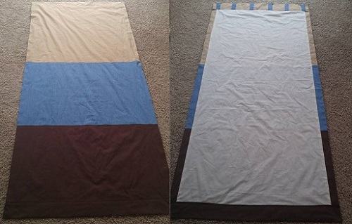
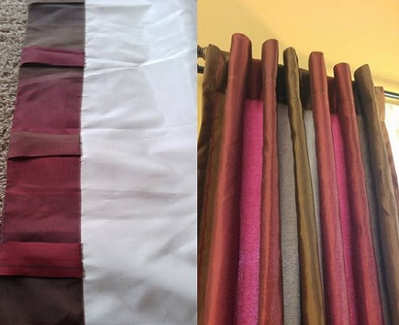
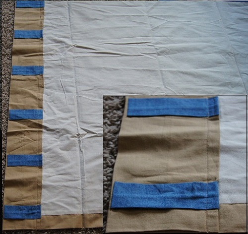
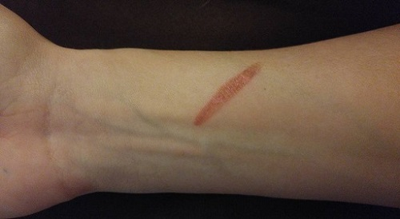

Featured Products

Green Apron
Size-Large
Perfect for your little baker!

Elsa Costume
Size-Medium
Inspired by the disney movie Frozen!


No plan, No pattern,
No problem
If there is one thing I have learned in my adulthood, it’s that almost nothing goes according to a carefully laid plan. I would go so far as to say the only way to survive day-to-day is to adapt to your immediate circumstances as quickly as they change. This is why I tend to take the “make lemonade” route in everything I do, as you have no doubt noticed. Not to say this is the secret to life or anything so profound. Merely there are always unforeseen obstacles and letting them trip you up will invariably leave you discouraged. A prime example of this is my situation of being laid off. Didn’t see that one coming, had no plan, in fact immediately afterwards I just walked around the house with my mouth agape for a solid day. After the initial PANIC wore off I did what I always do. Took a deep breath, and sat down to figure out a way to make my new situation work somehow. Where does this connect with my overall creative style? I almost never know exactly what my project will look like until I finish. Now don’t think that means I don’t know how to get something done right. I know the basics on how to accomplish countless things. However, almost every project will encounter a “problem” at some point. Unless of course you are Martha Stewart… on steroids… with a posse… and maybe some speed. You will almost always hit a stage of “oh crap, that just happened”, do I give up or keep going along a new path? Accepting this inevitability, relying on your resourcefulness, and really just allowing your inward creativity to take over is what will determine how awesome everything looks at the end. Don’t get me wrong I have a box of “hopeless” projects just like anyone else. Luckily for me I have scissors so that box is never full, it just fluctuates. Anyway enough on the why and on to a real life how. As you read before I had a pile of fabric, a general idea, and the internet (seriously thank God for the internet). My original plan was to make four 5ft x 7ft panels for a window that I had still yet to get measured. First curve ball, the liner fabric I purchased was smaller width wise than I in all my confusion had estimated. Second curve ball the window also was smaller than I had initially thought. But wait… Math? Those two things actually ended up cancelling each other out so I don’t have to worry about cutting a 6.5ft straightish line. In all fairness we can probably just write that off as luck, but for the purpose of making my title make sense I’m counting it (at least I’m honest). My re-devised plan still included four panels, slightly narrower, but still constructed from three face fabrics and one lining fabric.
Also not included in my plan was the method of hanging. Most curtains you see will either have a traditional rod-pocket heading. Things like rings, loops, or grommets can be added to change the look and drape. In this case I also added an extra option for a pleated look by attaching loops to the back of the heading that the rod is then threaded through.
These are my curtains which served as a jumping off point for my design. This has stitching on the very top which I was able to avoid by applying the loops prior to sewing the heading. My curtains hung in the pleated style I wasn’t sure of the best way to accomplish this without visible stitching on the front of the curtain. Lucky for me I happen to have examples of similar construction hanging in my own home. This is where my heading of no pattern may be misleading. A conventional pattern is usually written out in detail or even drawn out on tracing paper to ensure proper measurements and shape. I’m not what I would call an environmentalist but I am certainly a saver of green, ie. money, and purchasing patterns is hard for me to accept. More to the point when you say you made something without a pattern/recipe/guideline more often than not people are considerably more impressed, which is always an ego boost for a closet narcissist. I don’t typically mention that I used an optical pattern/concept from another object. Like an organic, albeit not truly identical, 3D printer. After careful scrutiny of my current wall treatments I discovered if I sewed the loops on prior to sewing the heading I would avoid having the unnecessary thread on the immediate front. Pressing it with an iron created a straight and even guideline to follow and the end result was a clean minimalist look. Perfect for a bachelor pad. No pattern, No problem
I should also mention an iron, although your best friend when sewing, is not to be fully trusted…
So at this point in my curtain saga I have half a heap of fabric, and four completed narrow panels. Part three of this series will cover the delicate balance you must achieve when selecting accessories in what I call “Take a chill, pillow”